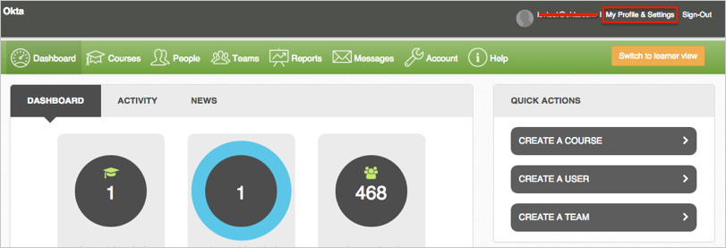
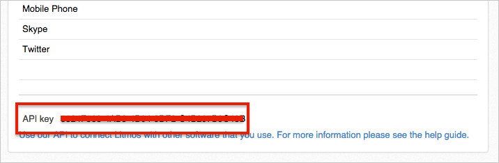
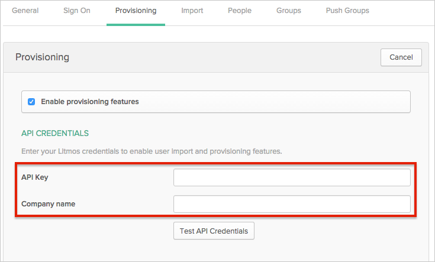
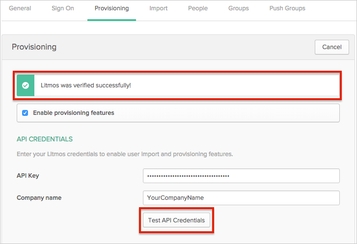
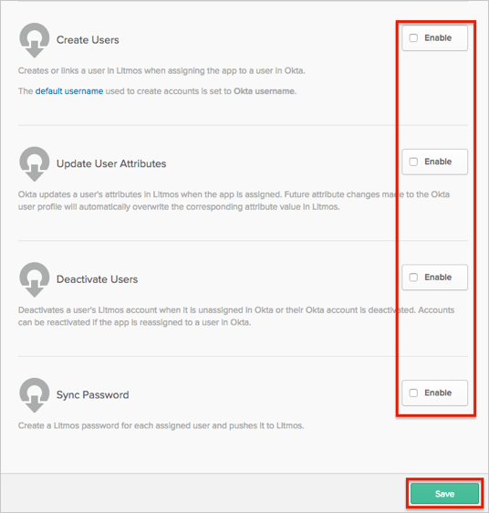
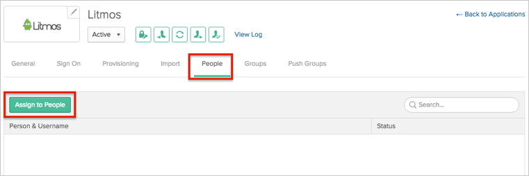
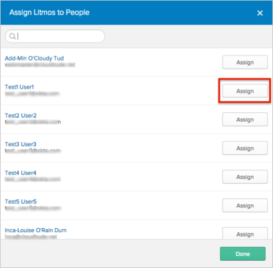
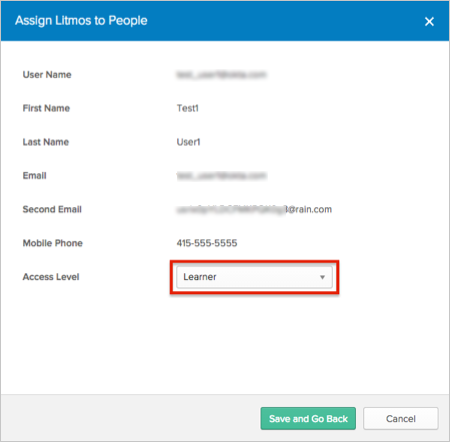

This guide provides the steps required to configure Provisioning for Litmos.
Note
Okta recently added support for Account Owner Access level for the Litmos application. In case your existing Litmos application does not support Account Owner Access level when assigning a user, you have to create a new instance of the Litmos application in your Okta org. If this is not acceptable, contact Okta Support and ask them to update your Litmos Application and add Account Owner Access level.
The following provisioning features are supported:
Push New Users
New users created through OKTA will also be created in the third party application.
Push User Deactivation
Deactivating the user through OKTA will remove the user from the organization and all teams in the third party application.
Push Profile Updates
Updates made to the user's profile through OKTA will be pushed to the third party application.
Import New Users
New users created in the third party application will be downloaded and turned in to new AppUser objects, for matching against existing OKTA users.
Import New Users
New users created in the third party application will be downloaded and turned in to new AppUser objects, for matching against existing OKTA users.
Import Profile Updates
Complete the following before you configure provisioning for Litmos:
Log in to your Litmos account as an Account Owner or Administrator.
Click on the My Profile & Settings link in the top of the page:

Scroll down and make a copy of your API key. You will need it to setup Litmos application in Okta.

Configure your Provisioning settings for Litmos as follows:
Check the Enable provisioning features box.
Enter your Litmos API Credentials:
API Key: Enter the API key you copied from Litmos (see Requirements above). Also, make sure that your AccessLevel is Administrator or Account Owner.
Company: Enter your company name. This is used to identify you in Litmos. You can enter any value that identifies your organization in Litmos.

Click Test API Creditentials. If your API credentials are valid, you will see a success message, as shown here:

Scroll down and enable the Provisioning Features you want to use for this app.

Click Save.
You can now assign people to the app, if needed (see below).
To assign users to the Litmos app, open the app, select the People tab and then click the Assign to People button:

In the Assign Litmos to People dialog, select a user, then click the Assign button:

You can select which access level grant to each user by selecting the corresponding value from the AccessLevel dropdown menu:

Click the Save and Go Back button.